Префектура Гумма · Кусацу · онсэн
Кусацу: юбатакэ, «юмоми» и новый квартал онсэна, по которому стоит пройтись
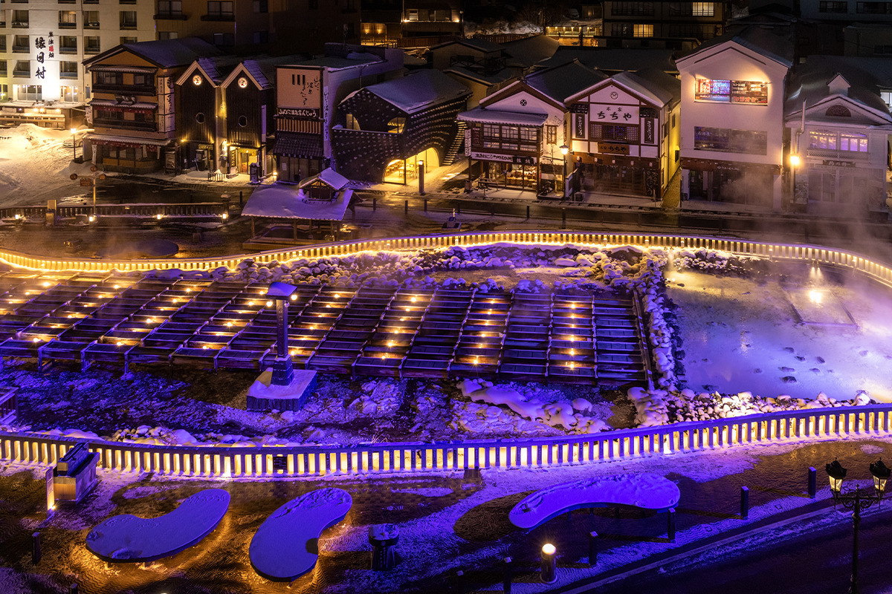
Кусацу знают по огромному юбатакэ, полю горячих источников в центре городка. В начале 2020-х годов здесь появились новые постройки, новые купальни и целый квартал, так что старый онсэн стоит обойти пешком.
Онсэн
Почему Кусацу называют лучшим онсэном Японии
Кусацу лежит высоко в горах на северо-западе префектуры Гумма, и о нём говорят, что здешняя вода лечит всё, кроме любовной тоски. По объёму воды, которая выходит на поверхность сама, без насосов, Кусацу первый в стране. Только главные источники дают в минуту: юбатакэ 4040 литров, Бандай 6200, Сайнокавара 1073, Никава 817, Сирахата 659, Нэцу-но ю 298 и Дзидзо 252. Вместе с остальными источниками выходит около 32 300 литров в минуту.
Вода в Кусацу очень кислая: у источника юбатакэ pH 2,1, и это одна из самых кислых вод в Японии. Она хорошо убивает микробы и, как считается, помогает при невралгии, болях в мышцах и суставах, ушибах. Воду нигде не разбавляют и не подогревают, она течёт в купальни прямо из источников. Поэтому Кусацу издавна был местом лечебных купаний, «тодзи», и входит в тройку знаменитых онсэнов страны.
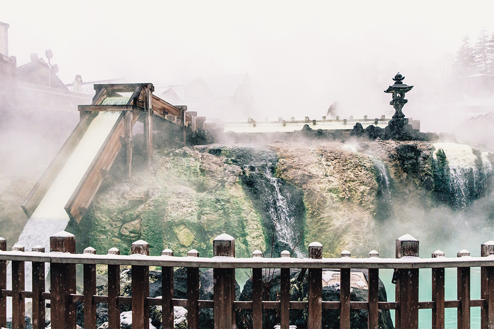
История у онсэна долгая. Предания связывают его с героями древних мифов и странствующими монахами. Ёритомо Минамото (1147–1199), основатель первого самурайского правительства, по преданию, в 1193 году приехал сюда во время охоты у вулкана Асама, нашёл источник Сирахата и искупался в нём. Он сидел в воде, поэтому вплоть до эпохи Мэйдзи купальню у источника называли «Годза-но ю», «купальня, где сидел господин».
В эпоху войн, по преданию, Хидэёси Тоётоми (1537–1598), объединитель Японии, советовал больному Иэясу Токугаве (1543–1616), будущему сёгуну, полечиться здешней водой. В эпоху Эдо воду Кусацу, как рассказывают, возили в Эдо, в замок сёгуна: так делали и сам Иэясу, и восьмой сёгун Ёсимунэ Токугава (1684–1751). В середине эпохи Эдо вдоль улиц стояло столько больших купален, что о городке говорили: тысяча домов, и всё по-столичному. Здесь и родились местные способы купаться: «юмоми», «дэнто-ю» и «авасэ-ю».
Юмоми
Как остудить воду, не разбавляя её
Вода из источников выходит почти пятидесятиградусной. Чтобы в неё можно было войти, не добавляя холодной воды, в Кусацу придумали «юмоми»: воду долго взбивают длинными досками около 180 см, и она остывает. Этот обычай идёт с эпохи Эдо, а работу сопровождает своя песня, «Кусацу-буси».
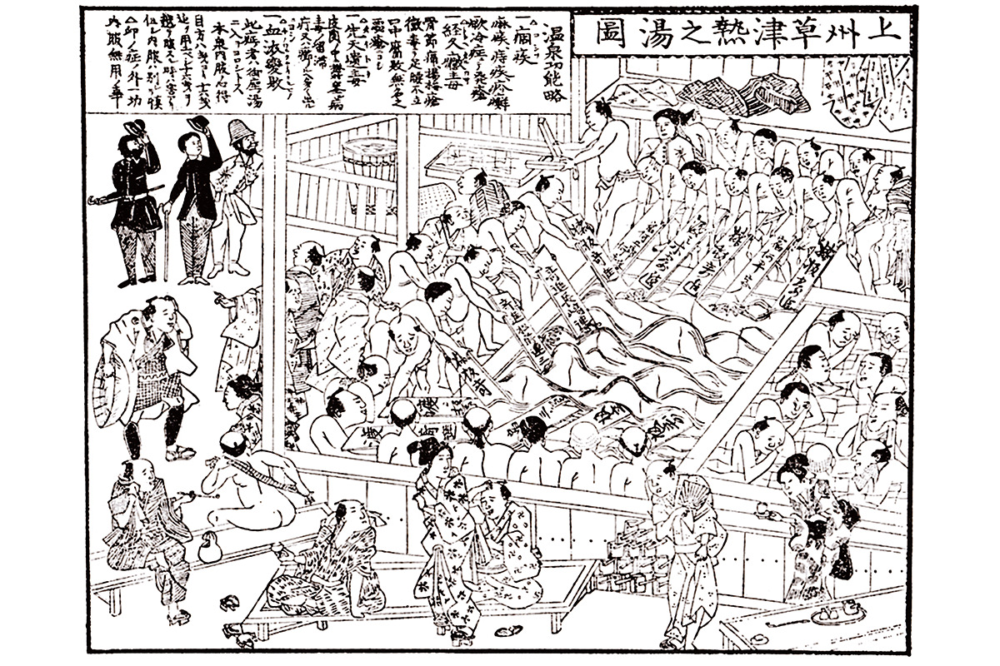
Юбатакэ
Поле горячих источников по проекту Таро Окамото
Юбатакэ, «поле горячей воды», был в Кусацу уже в середине эпохи Эдо. Горячую воду из источника пускают по открытым желобам, на воздухе она остывает, а соли, которые оседают на дне, собирают как «юнохана», «цветы горячей воды».
Нынешний вид юбатакэ получил в 1975 году. Его автор Таро Окамото (1911–1996), один из самых известных японских художников XX века. Он любил лыжи и онсэны и часто ездил в Кусацу, а когда городок попросил его заняться юбатакэ, охотно согласился и продумал всё пространство вокруг. Форма в виде тыквы-горлянки и узор каменной мостовой сразу выдают его руку.
Обновлением городка занимались и другие архитекторы и дизайнеры. Работу вели два брата, специалист по городскому планированию и архитектор. Известный светодизайнер заново придумал подсветку юбатакэ, а гостиницу «Кимурая» прямо у поля построил Кэнго Кума. Так у старого онсэна появилось новое лицо, и самый заметный его результат это квартал Ура-Кусацу.
Ура-Кусацу
Квартал, где можно не спешить
Многие думают, что гулять в Кусацу можно только вокруг юбатакэ. Квартал Ура-Кусацу, «обратная сторона Кусацу», открылся в 2022 году и показывает, что это не так. От юбатакэ до его центра, купальни «Дэнто-ю Дзидзо», около пяти минут пешком, а по дороге с обзорной площадки видно, как над юбатакэ поднимается пар.
Квартал вырос вокруг источника Дзидзо, вода которого, по преданию, хорошо помогает глазам. Общий замысел принадлежит старшему из братьев. Ему было важно, чтобы Ура-Кусацу отличался от шумного юбатакэ, где толпятся туристы, и чтобы на улицах снова появился вид старого онсэнного городка. Новые здания спроектировал младший брат: это деревянные дома из старого дерева и камня, построенные по традиционной технике, с крышами из деревянной дранки. Дома новые, но выглядят так, будто стояли здесь всегда.
«Манга-до»: библиотека манги
В «Манга-до» около 10 000 томов манги, от классики до новинок. Отдельно собраны работы художников, связанных с Кусацу, среди них Тэцуя Тиба и Фудзио Акацука, автор «Тэнсай Бакабон». На втором этаже висят рисунки и подписи, которые известные мастера манги оставили вместе на одном листе. Двухэтажное деревянное здание с высоким потолком братья тоже строили вдвоём.
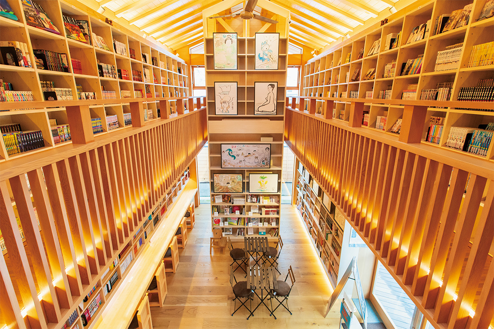
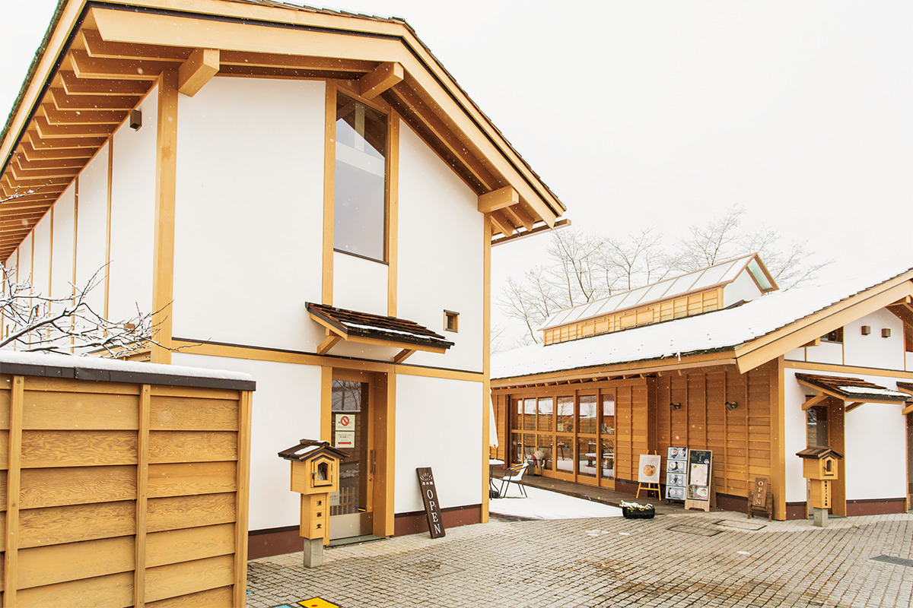
«Манга-до»
- Адрес
- префектура Гумма, уезд Агацума, Кусацу, Кусацу
- Телефон
- +81 279-82-5641 (кафе «Цуки-но као»)
- Часы работы
- 9:30–16:00
- Выходные
- без выходных (бывают перерывы на обслуживание)
- Цены / Вход
- взрослые 400 иен, школьники младших классов 300 иен (на 2 часа)
Площадь на холме и купальни для лица и рук
Площадь на холме сделали для тех, кто хочет отдохнуть от суеты у юбатакэ: на её широких ступенях можно сесть и почитать мангу. Вечером площадь подсвечивают, и тогда прогулка здесь особенно хороша.
В Кусацу есть предание о «Мэарай-дзидзо», статуе Дзидзо у источника, водой которого промывали глаза, и глазные болезни будто бы проходили. Рядом с купальней «Дзидзо-но ю» устроили «као-ю», купальню для лица: над деревянными ящиками поднимается пар источника Дзидзо, и, как говорят, он хорош для кожи. Купальни для лица почти не встречаются в других онсэнах.
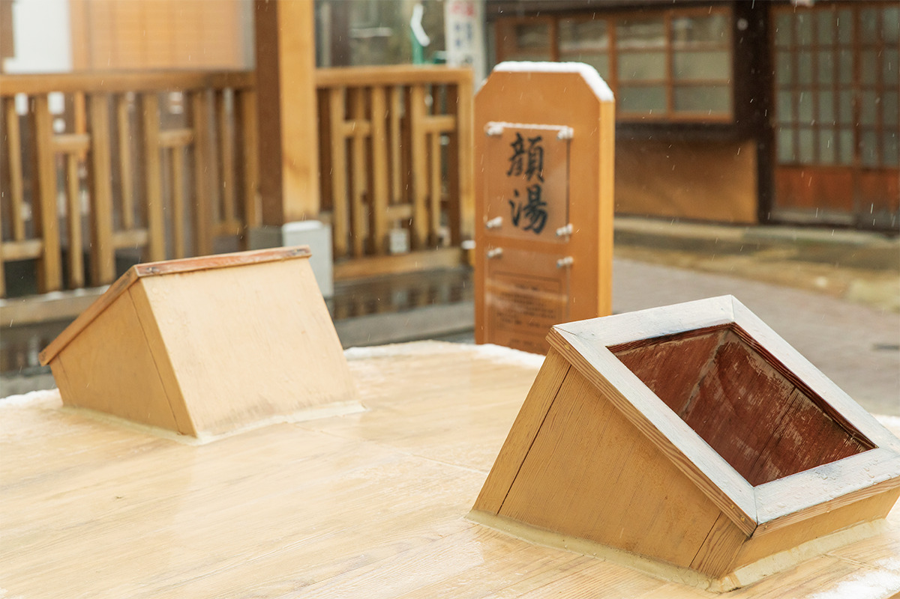
После того как в новостях написали об исследовании, по которому вода источника юбатакэ лишает вирусы способности заражать, появилась и «тэарай-но ю», купальня для рук. Старую купальню для ног тоже обновили, и все три можно обойти за одну прогулку.
«Дэнто-ю Дзидзо»: общественная купальня только для своих
Главная новинка квартала это «Дэнто-ю Дзидзо», купальня при общественной бане «Дзидзо-но ю», которую можно снять целиком для семьи или друзей. Она частная, но просторнее самой общественной бани. Большая ванна сделана из дерева и пахнет им, а для гостей приготовлены доски, чтобы самим попробовать «юмоми».
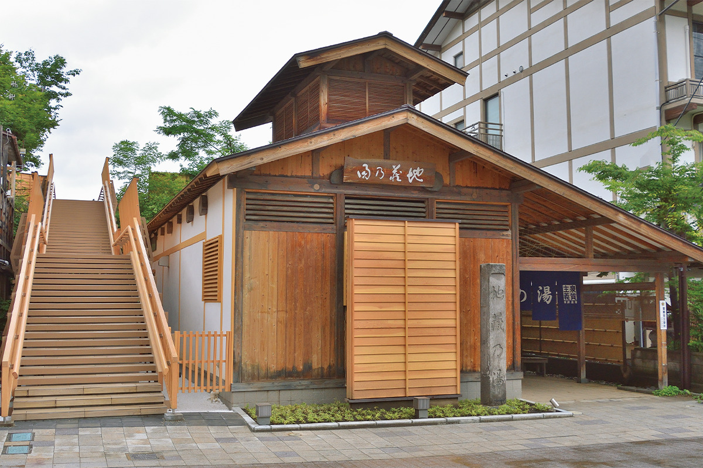
«Дэнто-ю Дзидзо»
- Адрес
- префектура Гумма, уезд Агацума, Кусацу, Кусацу, 299
- Телефон
- +81 279-88-1320 (только по записи, можно записаться в тот же день)
- Часы работы
- сеансы по 1 часу с 9:00, 10:30, 12:00, 13:30, 15:00
- Выходные
- среда
- Цены / Вход
- 3500 иен за час
Дэнто-ю
Как купаться по-старому
«Дэнто-ю», «традиционное купание», придумали ещё во времена, когда в Кусацу ехали лечиться. Порядок такой:
- Перед купанием сделайте «юмоми»: это и разминка, и способ остудить воду.
- Полейте ноги горячей водой, 10–20 ковшей.
- Вылейте на голову около 30 ковшей: «кабури-ю» гонит кровь к голове и помогает не упасть в обморок.
- Посидите в воде 3 минуты.
- Выйдя из воды, опустите голову и спокойно отдохните, чтобы давление не менялось резко.
Всё это повторяли четыре раза в день.
Купальни
Шесть купален и почти все главные источники
Общественные купальни в Кусацу содержат сами жители, и так ведётся с эпохи Эдо. В них отдыхали многие знаменитые люди и писатели, любившие Кусацу. Из 19 общественных купален приезжим открыты три: «Сирахата-но ю», «Дзидзо-но ю» и «Тиё-но ю». Все три бесплатные, и вода в каждой своя, из отдельного источника, так что их удобно обойти подряд.
Платные купальни для однодневного купания устроены удобнее: «Годза-но ю», «Отаки-но ю» и открытая купальня Сайнокавара. В любой из них продаётся пропуск «Тёйна санто мэгури тэгата» на все три, так выходит дешевле. Срока действия у пропуска нет, после купаний он становится открыткой, а тот, кто обошёл все три, получает свидетельство «мастера трёх купален».
Шесть купален вместе дают почти все главные источники Кусацу. Только помните, что в общественные купальни местные жители ходят каждый день, и вы здесь в гостях. Соблюдайте правила, которые там написаны.
Три бесплатные общественные купальни
«Сирахата-но ю» самая большая общественная купальня Кусацу. Её вода из источника, который, по преданию, нашёл Ёритомо Минамото, а название, «белое знамя», взято от знамени его рода Минамото. Вода прозрачная, с запахом сероводорода, 50,8 °C.
«Дзидзо-но ю» стоит на площади Дзидзо, рядом с храмиком Дзидзо. Вода источника Дзидзо (48,4 °C) мягче других, поэтому с этой купальни удобно начать, если вы впервые идёте в общественную баню.
«Тиё-но ю» единственная из трёх бесплатных купален, куда вода идёт прямо из источника юбатакэ (51,3 °C). Здесь можно попробовать «дэнто-ю».
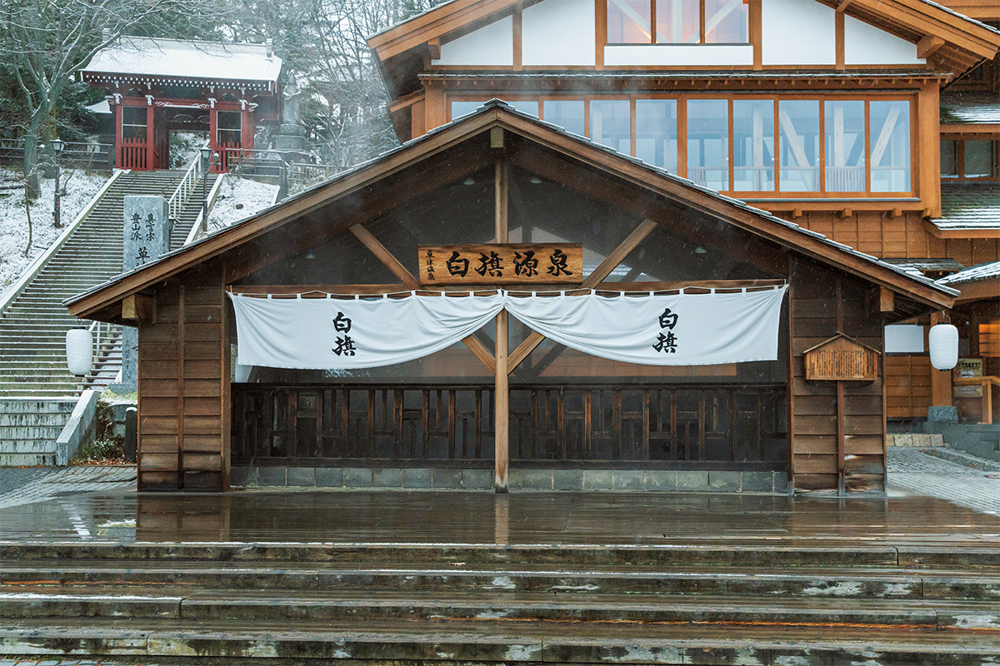
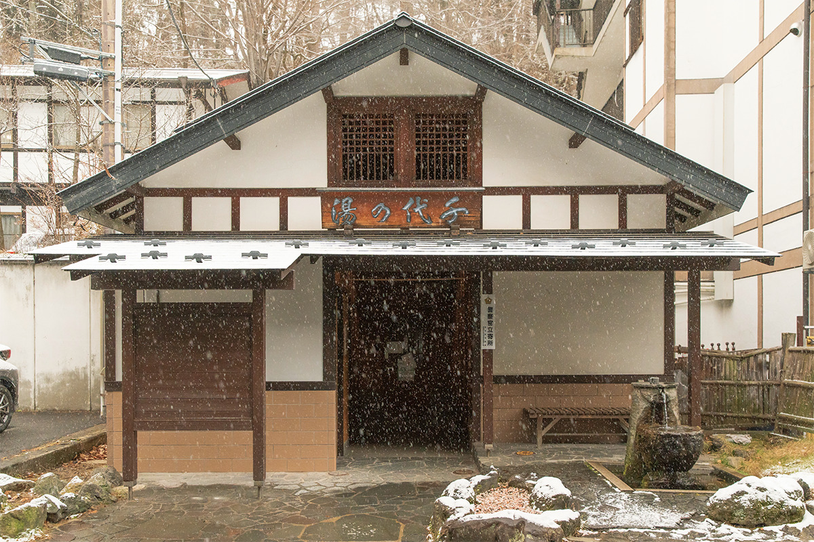
«Сирахата-но ю»
- Адрес
- префектура Гумма, уезд Агацума, Кусацу, Кусацу
- Часы работы
- 5:00–23:00
- Выходные
- без выходных
- Цены / Вход
- бесплатно
«Дзидзо-но ю»
- Адрес
- префектура Гумма, уезд Агацума, Кусацу, Кусацу
- Часы работы
- 8:00–22:00
- Выходные
- без выходных
- Цены / Вход
- бесплатно
«Тиё-но ю»
- Адрес
- префектура Гумма, уезд Агацума, Кусацу, Кусацу
- Часы работы
- 5:00–23:00
- Выходные
- без выходных
- Цены / Вход
- бесплатно
Три купальни для однодневного купания
«Годза-но ю» повторяет общественную купальню с тем же названием, которая стояла здесь в эпохи Эдо и Мэйдзи. Вода из двух источников, юбатакэ (51,3 °C) и Бандай (96,5 °C), большие ванны каждый день меняются между мужской и женской половиной.
«Отаки-но ю» городская купальня, где есть всё нужное. Здесь можно попробовать «авасэ-ю», старый способ купаться по очереди в нескольких ваннах, где вода с каждым разом горячее. Вода из источника Никава, 45 °C.
Открытая купальня Сайнокавара самая большая в Кусацу. Вода из источника Бандай. Весной вокруг свежая зелень, осенью красные клёны, зимой снег, а вечером купальню подсвечивают.
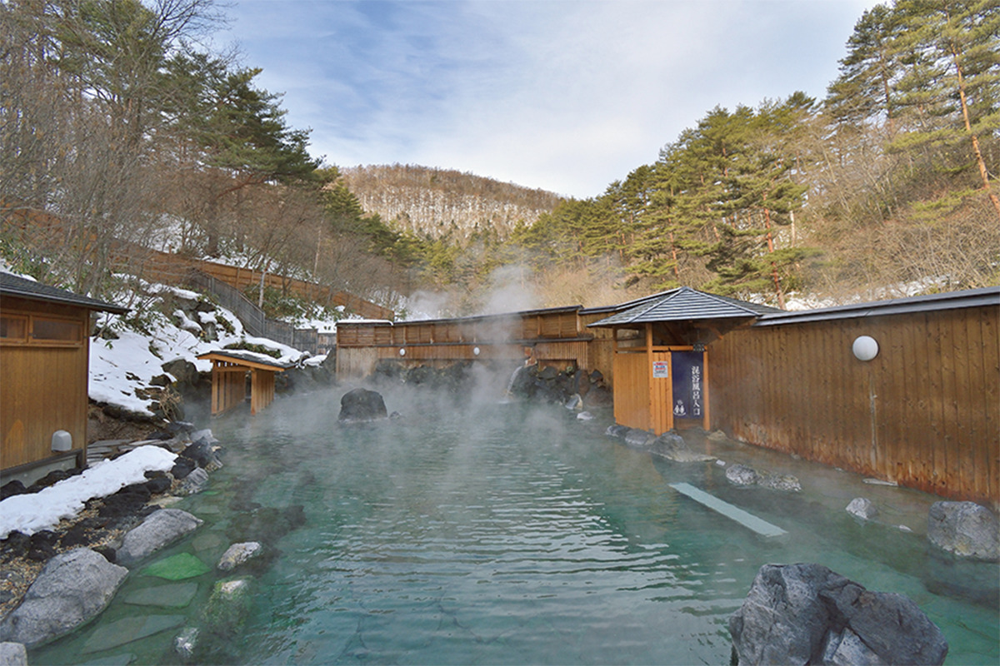
«Годза-но ю»
- Адрес
- префектура Гумма, уезд Агацума, Кусацу, Кусацу, 421
- Телефон
- +81 279-88-9000
- Часы работы
- 8:00–21:00 (вход до 20:30), с апреля по 30 ноября с 7:00
- Выходные
- нерегулярно (раз в год перерыв на обслуживание)
- Цены / Вход
- взрослые 700 иен, дети 350 иен; полотенца продаются
- Сайт
- gozanoyu.com
«Отаки-но ю»
- Адрес
- префектура Гумма, уезд Агацума, Кусацу, Кусацу, 596-13
- Телефон
- +81 279-88-2600
- Часы работы
- 9:00–21:00 (вход до 20:00)
- Выходные
- нерегулярно (раз в год перерыв на обслуживание)
- Цены / Вход
- взрослые 980 иен, дети 450 иен; полотенца напрокат и в продаже
- Сайт
- ohtakinoyu.com
Открытая купальня Сайнокавара
- Адрес
- префектура Гумма, уезд Агацума, Кусацу, Кусацу, 521-3
- Телефон
- +81 279-88-6167
- Часы работы
- 9:00–20:00 (вход до 19:30), с апреля по 30 ноября с 7:00
- Выходные
- нерегулярно (раз в год перерыв на обслуживание)
- Цены / Вход
- взрослые 700 иен, дети 350 иен; полотенца продаются
- Сайт
- sainokawara.com
Где остановиться
Новые гостиницы у юбатакэ
Перемены коснулись не только улиц: гостиницы Кусацу тоже ищут свой стиль, кто в архитектуре, кто в кухне. Об отдельных гостиницах на сайте есть свои статьи: рёкан «Нарая», работающий с 1877 года, Hotel KurBio с органической кухней и купальней с видом на вулкан Асама, а также рёкан «Цуцудзи-тэй».
«Кимурая»: юбатакэ, поставленный вертикально
Двухэтажное деревянное здание у самого юбатакэ спроектировал Кэнго Кума. Его идея: превратить юбатакэ в объём. Стену покрывают камни с вулкана Асама, такие же, что лежат на юбатакэ, и уложены они по кривой, похожей на поднимающийся пар. В доме всего один номер, на втором этаже, с камином и собственной купальней, куда течёт горячая вода источника Сирахата. Гостей принимают по одной компании за раз и только без питания.
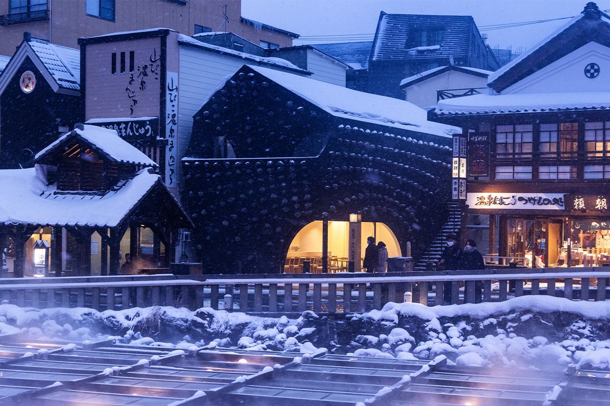
«Кимурая»
- Адрес
- префектура Гумма, уезд Агацума, Кусацу, Кусацу, 117-1
- Телефон
- +81 279-82-5920
- Номера
- 1
- Цены / Вход
- ночь без питания от 110 000 иен (с налогом и сервисом)
«Котаро»: тэмпура в доме Кэнго Кумы
На первом этаже «Кимураи» работает ресторан тэмпуры «Котаро», и его зал тоже проектировал Кэнго Кума: лучше всего архитектура видна из отдельных комнат. Жарят здесь горные травы и овощи из окрестностей Кусацу и другие продукты по сезону, и для каждого шеф подбирает своё масло и свою температуру. Свой подход к маслу он вынес из учёбы в Канадзаве. Днём подают в основном обеды, вечером только три вида ужина из нескольких блюд, например «Умэ» за 6600 иен (в 2023 году).
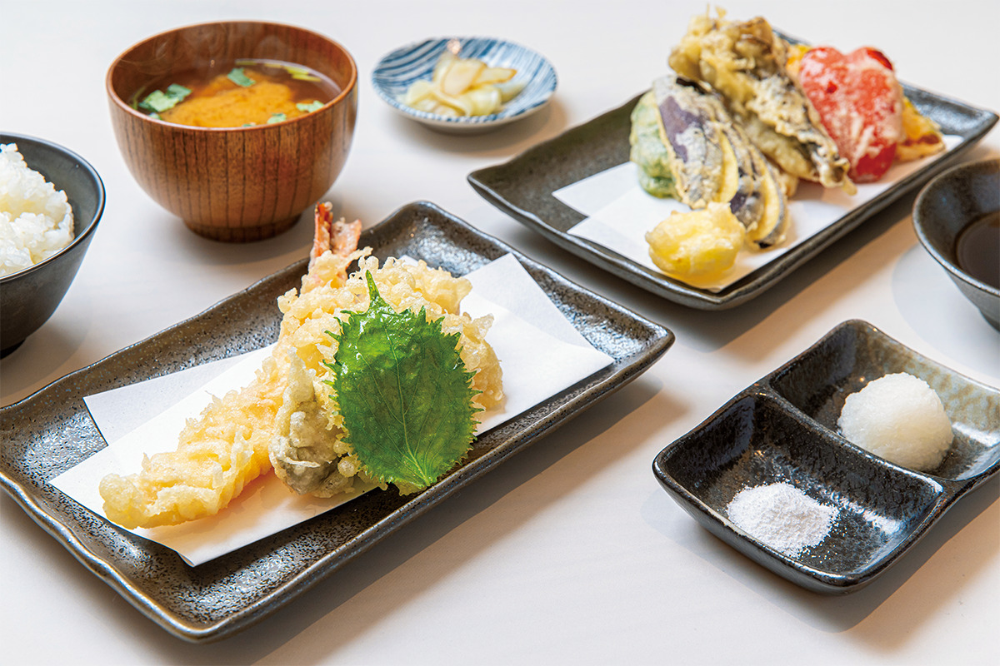
«Котаро»
- Телефон
- +81 279-82-5926
- Часы работы
- 12:00–14:30 (последний заказ), 18:00–20:30 (последний заказ)
- Выходные
- вечер понедельника, вторник (бывают и другие выходные)
Kei и Gensen Ichinoyu
Kei стоит в Ура-Кусацу, недалеко от юбатакэ, на месте старой гостиницы «Такасагокан», которая работала больше ста лет. Это обэрж, где купание, ночлег и ресторан задуманы как одно целое: все 7 номеров сюиты, ужин построен на японской кухне и подаётся чередой красивых сезонных блюд в ресторане в чёрных и древесных тонах. В частной купальне AWASE течёт вода редкого источника Дзидзо.
Gensen Ichinoyu рассчитан на тех, кто хочет больше гулять по онсэну. Это гостиница только с ночлегом, где можно жить долго, «как дома», в память о временах, когда в Кусацу приезжали лечиться неделями. Японский рёкан, которому больше 100 лет, переделали в современном духе, но сохранили его основательность. Кроме большой купальни с водой юбатакэ есть частная купальня с собственным источником гостиницы. У гостиницы начинается вход в Ура-Кусацу.
Kei
- Адрес
- префектура Гумма, уезд Агацума, Кусацу, Кусацу, 297
- Телефон
- +81 279-82-1800
- Номера
- 7
- Цены / Вход
- ночь с ужином и завтраком от 47 300 иен (с налогом и сервисом, без налога на купание)
- Сайт
- kei-kusatsu.com
Gensen Ichinoyu
- Адрес
- префектура Гумма, уезд Агацума, Кусацу, 135
- Телефон
- +81 279-89-8122 (7:00–22:00)
- Номера
- 46
- Цены / Вход
- ночь без питания от 10 800 иен (с налогом и сервисом); бронь только на сайте
Фото: Кадзуя Хаяси; «Кимурая»; туристическая ассоциация Кусацу онсэн.